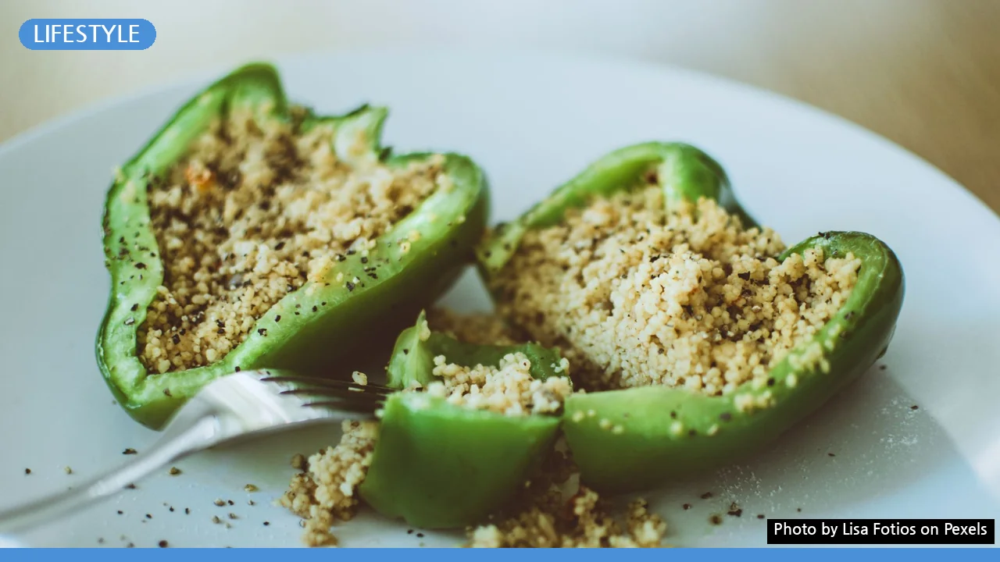
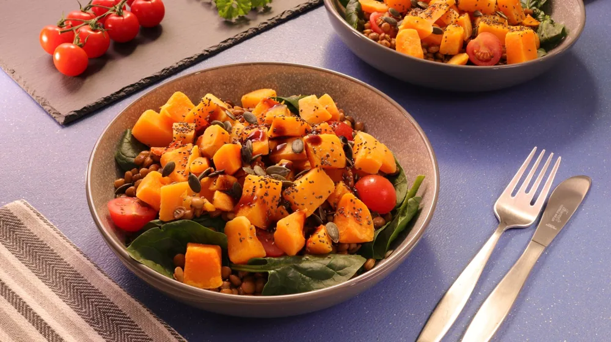

비건 식단 초보 가이드: 고기 없이도 맛있게 채우는 3단계
사진: Lisa Fotios / Pexels (무료 이미지, 출처 표기)
완벽함보다 무해함으로, 비건 식단 가볍게 시작하기

건강이나 환경을 위해 비건(Vegan, 완전 채식) 식단에 도전해보고 싶지만, 당장 오늘부터 고기와 우유를 모두 끊으려니 막막하게 느껴지기 마련입니다. 처음부터 완벽한 채식을 고집하면 금방 지치기 쉽습니다. 완벽한 비건 한 명보다, 느슨하게 채식을 실천하는 여러 명의 영향력이 더 크다는 점을 기억하세요. 내 몸에 무리를 주지 않으면서 일상에 스며드는 현실적인 비건 시작법을 정리해 드립니다.
나에게 맞는 채식 단계 알아보기
채식은 허용하는 식재료의 범위에 따라 여러 단계로 나뉩니다. 무작정 고기를 끊기보다, 현재 나의 식습관에서 가장 실천하기 쉬운 단계부터 차근차근 시작하는 것이 좋습니다. 아래 표를 통해 나에게 맞는 단계를 탐색해 보세요.
실패 없이 채식을 습관화하는 3단계 실천법
식습관을 바꾸는 것은 뇌가 새로운 행동에 적응할 시간을 주는 과정입니다. 다음의 3단계를 통해 일상에 채식을 자연스럽게 녹여내 보세요.
1단계: 하루 한 끼 또는 일주일에 하루 채식하기
갑자기 삼시 세끼를 모두 바꾸려면 스트레스를 받게 됩니다. '월요일은 고기 없는 날'처럼 특정 요일을 정하거나, 아침 한 끼는 과일과 두유로 가볍게 먹는 것부터 시작하세요. 이것만으로도 소화가 가벼워지는 변화를 느낄 수 있습니다.
2단계: 평소 먹던 메뉴의 식재료 대체하기
완전히 새로운 비건 요리에 도전하기보다, 평소 즐겨 먹던 한식 메뉴에서 동물성 재료를 식물성으로 바꾸는 것이 훨씬 쉽습니다. 예를 들어 김치찌개에 돼지고기 대신 두부를 듬뿍 넣고, 카레에 감자와 버섯을 크게 썰어 넣는 방식입니다. 시중에 나와 있는 대체육을 활용하는 것도 좋은 방법입니다.
3단계: 비건 인증 마크 확인하며 장보기
가공식품을 살 때는 제품 뒷면의 식품 성분표를 확인하거나 한국비건인증원 등 공식 기관의 인증 마크가 있는지 살펴보는 습관을 들여보세요. 생각지도 못했던 과자나 소스류에 쇠고기 액기스나 젖당(우유 성분)이 들어있는 경우가 많아 식재료를 고르는 안목이 자연스럽게 길러집니다.
초보자를 위한 실용적인 대체 식재료 가이드
처음 비건 식단을 구성할 때 유제품과 고기의 빈자리를 채워줄 훌륭한 대체 식재료들을 소개합니다.
- 귀리 우유 (Oat Milk) 또는 두유: 라떼나 시리얼에 우유 대신 활용하기 좋습니다. 특히 귀리 우유는 고소하고 부드러운 맛이 우유와 가장 유사합니다.
- 두부와 템페: 두부는 훌륭한 단백질 공급원입니다. 템페(Tempeh, 인도네시아식 콩 발효 식품)는 꼬들꼬들한 식감이 있어 고기 대신 볶음이나 구이에 쓰기 좋습니다.
- 뉴트리셔널 이스트 (Nutritional Yeast): 치즈 맛과 향을 내는 비활성 효모 가루입니다. 파스타나 샐러드 위에 뿌리면 비건 치즈 가루 역할을 톡톡히 해냅니다.
비건 식단 시작 시 주의해야 할 영양소
채식을 시작하면서 채소만 많이 먹다 보면 오히려 쉽게 배가 고프거나 영양 불균형이 올 수 있습니다. 특히 채식주의자에게 결핍되기 쉬운 영양소는 미리 챙겨야 합니다. 적절한 대체 식품과 영양제 섭취가 필요합니다.
동물성 식품에만 주로 존재하는 비타민 B12는 영양제나 강화 두유 등을 통해 별도로 보충하는 것이 안전합니다. 또한, 식물성 철분(비헴철)은 체내 흡수율이 낮으므로 비타민 C가 풍부한 감귤류, 토마토 등과 함께 섭취하여 흡수율을 높여주는 것이 좋습니다. 신체 변화에 이상이 느껴진다면 전문의나 영양사와의 상담을 통해 개인의 체질에 맞는 영양 설계를 받는 것을 권장합니다.
🔗 이 글도 함께 보면 좋아요: 미루는 습관 고치는 법, '5초 법칙'과 의지력 없이 시작하는 4단계
관련 추천 상품
이 포스팅은 쿠팡 파트너스 활동의 일환으로, 이에 따른 일정액의 수수료를 제공받습니다.
한눈에 보는 상품 목록
귀리 우유 (Oat Milk)
템페 (Tempeh)
뉴트리셔널 이스트